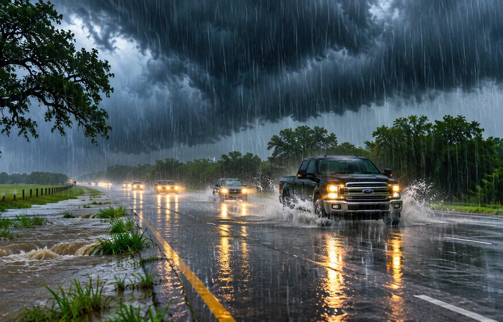

HILL COUNTRY
A Gray Sunday in the Hill Country—and a Reason to Watch the Creeks
NOVEMBER 8, 2026 · TNS NEWS DESK

A cool, wet weekend can look harmless until runoff begins moving through familiar low spots.
Central Texas is experiencing the sort of rain event that can be both welcome and disruptive. San Antonio-area forecasts published Sunday describe repeated rounds of rain through Monday, with many locations potentially receiving 1 to 4 inches and isolated pockets substantially more.
The Weather Prediction Center’s early Sunday discussion also highlighted the Balcones Escarpment, where terrain can accelerate runoff. Some locations had already recorded 1 to 2.5 inches over the preceding 6 to 12 hours, and more rain was possible. The concern is not that every Hill Country creek will flood; it is that a narrow, intense storm band can quickly change conditions at one crossing.
For Horseshoe Bay, Marble Falls and nearby communities, local conditions may vary sharply from the broad regional forecast. A dry driveway is not evidence that a low-water crossing several miles away is passable. Likewise, a gloomy sky does not guarantee severe weather at every address.
The best approach is to monitor NWS Austin/San Antonio updates and county road information before driving, especially after dark. Do not attempt to judge water depth from inside a vehicle. The same crossing that looks shallow in the morning can change with rainfall upstream.
After the rain, the next story will be how much water actually reaches reservoirs and how quickly the landscape dries out. Until then, the immediate focus is simple: pay attention to where the heaviest rain is falling, not merely whether it is raining outside your window.
Sources and continuing coverage
origin-east-www-wpc.woc.noaa.gov · www.weather.gov · www.ksat.com
Published November 8, 2026. Forecasts and warnings can change. TNS analysis is distinguished from official weather alerts and verified reporting.